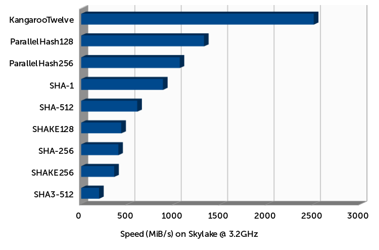

We propose a fast and secure arbitrary output-length hash function aiming at a higher speed than the FIPS 202's SHA-3 and SHAKE functions, while retaining their flexibility and basis of security. Furthermore, it can exploit a high degree of parallelism, whether using multiple cores or the single-instruction multiple-data (SIMD) instruction set of modern processors. On Intel's® Haswell and Skylake architectures, KangarooTwelve tops at less than 1.5 cycles/byte for long messages on a single core. Short messages also benefit from about a factor two speed-up compared to the fastest FIPS 202 instance SHAKE128.

Guido Bertoni, Joan Daemen, Michaël Peeters, Gilles Van Assche and Ronny Van Keer — August 2016